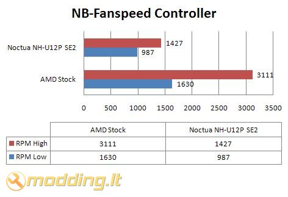
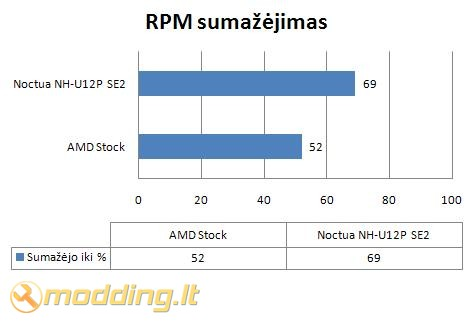

Noiseblocker NB-Fanspeed Controller
 Blacknoise Germany kompanija specializuojasi ventiliatorių, aušintuvų bei aušinimo aksesuarų gamyboje. Pirmasis šios kompanijos gaminys Noiseblocker Ultra-SilentFan buvo išleistas 2000 metais - nuo to ir prasidėjo kompanijos veikla, skirta tyliems PC aušinimo sprendimams. Šiandieną apžvalgoje Noiseblocker NB-Fanspeed Controller - ventiliatorių apsukų reguliatorius.
Blacknoise Germany kompanija specializuojasi ventiliatorių, aušintuvų bei aušinimo aksesuarų gamyboje. Pirmasis šios kompanijos gaminys Noiseblocker Ultra-SilentFan buvo išleistas 2000 metais - nuo to ir prasidėjo kompanijos veikla, skirta tyliems PC aušinimo sprendimams. Šiandieną apžvalgoje Noiseblocker NB-Fanspeed Controller - ventiliatorių apsukų reguliatorius.
Žvilgsnis iš arčiau
NB-Fanspeed Controller gaminys supakuotas nedidelėje, permatomoje pakuotėje. Galinėje pakuotės pusėje nurodytos pagrindinės gaminio charakteristikos bei gamintojo rekvizitai.
Pakuotės viduje randame:
- NB-Fanspeed Controller apsukų reguliatorių su pajungimo laidais
Specifikacijos
- Įtampa: 7 - 11.8 V
- Reguliuojama varža: 100 Ohm
- Max galia: 3.5 W
- Kištukas: 3 pin
- Tvirtinimas: į galinę korpuso sienelę
NB-Fanspeed Controller geruliatorius labai paprastas - tai reguliuojama 100 Ohm varža su rankenėle, kuri sumontuota ant metalinės plokštelės, skirtos tvirtinti į korpuso galinę sienelę. Ant plokštelės pavaizduotis Low ir High rėžimai. Nuo reguliatoriaus eina laidas, kuris išsišakoja - vienas kištukas skirtas jungti į motininę plokštę, kitas - prijungti ventiliatorių.
Tvirtinimas
Montuodamas NB-Fanspeed Controller susidūriau su keblumais - reguliatoriaus rankenėlė buvo per didelė, kad tilptų į tvirtinimo tarpą. Tokia problema iškilo reguliatorių montuojant į Antec Mini P180 bei Codegen korpusus. Sumontuoti reguliatorių į korpusus pavyko nuėmus rankenėlę nuo reguliuojamos varžos.
Rezultatai
NB-Fanspeed Controller reguliatorius buvo pajungtas prie AMD Stock bei Noctua NH-U12P SE2 aušintuvų, stebėtas RPM kitimas. Išmėginti Low ir High rėžimai.


Kaip matome iš grafikų, reguliatorius 48% sumažino AMD Stock bei 31% NH-U12P SE2 aušintuvų apsukas. Sumažinus AMD Stock aušintuvo apsukas, jo triukšmo lygis žymiai sumažėjo.
Išvados
Pliusai:
- efektyvus RPM reguliavimas
- kokybiškas
- ilgi laidai
- juodos spalvos tvirtinimo plokštelė
- kaina (3-4 €)
Minusai:
- nerasta
 Noiseblocker NB-Fanspeed Controller reguliatorius gali būti naudojamas tiek CPU aušintuvo, tiek korpuso ventiliatorių apsukų reguliavimui. Funkcionalus, gerai atrodantis reguliatorius tikrai pravers - visuomet galėsit rasti sau tinkamiausią triukšmo/apsukų santykį. Ilgi pajungimo laidai leis pasiekti bet kurioje korpuso dalyje montuojamus ventiliatorius. Šio gaminio kaina ~ 3-4 €.
Noiseblocker NB-Fanspeed Controller reguliatorius gali būti naudojamas tiek CPU aušintuvo, tiek korpuso ventiliatorių apsukų reguliavimui. Funkcionalus, gerai atrodantis reguliatorius tikrai pravers - visuomet galėsit rasti sau tinkamiausią triukšmo/apsukų santykį. Ilgi pajungimo laidai leis pasiekti bet kurioje korpuso dalyje montuojamus ventiliatorius. Šio gaminio kaina ~ 3-4 €.
Modding.lt komanda dėkoja Niels Polenz iš www.blacknoise.com už apžvalgai suteiktą produktą.
Jei norėsite pakomentuoti mano straipsnį arba pareikšti savo nuomonę, apsilankykite Modding.lt forume.


{kind=link}
{kind=link}
{kind=link}
{kind=link}
{kind=link}
{kind=link}
{kind=link}
{kind=link}
{kind=link}